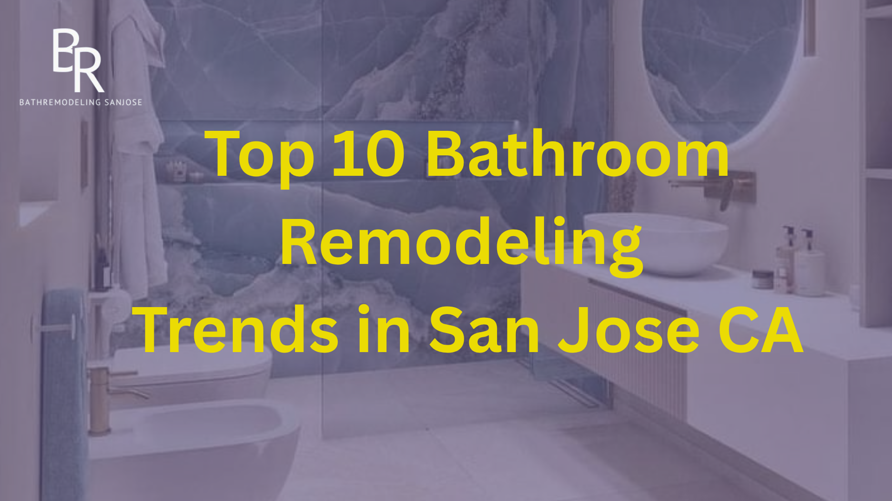

Thinking about upgrading your bathroom in 2025? Redesigning your home is either to be a comfortable place or for resale value and it all depends on you, but to make any choice, being informed about the current trends in design is a bonus. In San Jose, CA where style and innovation come together, the trends of bathroom remodeling are the current ones and evolve dynamically. These are the 10 current trends that are transforming bathrooms within homes in San Jose.
The new generation of homeowners wants to treat their bathrooms as a spa. Visualize a shower experience that has rainfall showers, isolation soaking tub, warm light and in-built aromatherapy diffuser. The lush amenities assist in converting your residence into a personal oasis where you can finally relax once you are done with a full day of work in the tech hub of Silicon Valley lifestyle.
The technologically driven people are adopting intelligent bathrooms in San Jose. Some of the more popular advanced things to install are voice response lighting, heated floors, motion-controlled faucets and intelligent mirrors with displays. These newly added things not only make living convenient, but also energy saving, and your home is not only high-tech, but also eco-friendly.
Medium-tempered earthiness, wood, and stone organization is coming in to swap ice-cold whites and greys. Slate, travertine, and teak are also used in the bathroom to bring calm and nature into the building in perfect harmony with the modern California way of living. These factors also are connected to the sustainable living culture that is observed in San Jose.
The trend of minimalism still impacts on the design of the bathrooms. Floating vanities with clean sleek lines are good in both looks and in their use such as increased floor space and cleaning. Facilitating this same minimalist style, home-owners in San Jose are settling on wall-mounted vanities, usually high-quality laminates or using wood (preferably sustainable) and in this way, creating an elegant, clutter-free appearance.
Overhead lighting need not be basic anymore, it is 2025 and time to make a statement. Whether it is pendant lights, LED backlit mirrors, sculptural sconces or otherwise, lighting is becoming both decoration and object. Modern bathrooms in San Jose homes have very dramatic lighting features that enhance the image of the bathroom and make it very stylish.
Frameless glass showers have remained top of the game in the San Jose remodeling game. They provide a spacious, hygienic aesthetic and can be used to highlight the aesthetic details of complicated tile patterns. In addition, they are used in small bathrooms where they give the illusion of a spacious bathroom. The enclosures are classy and easy to maintain which is a very big advantage to busy house owners.
In 2025, subway tiles are about to sit on the bench as more homeowners utilize adventurous forms of tiles. geometry, Moroccan-style pottery and rustic finishes. Bathrooms in the city of San Jose are taking on a character of their own with accent walls and floors composed of distinctive colored tile patterns.
The Californian region is highly environmentally conscious and the San Jose dwelling citizens are renovating their homes to include environmentally friendly functions. More efficient toilets that use less water and water saving faucets and light fixtures that consume less energy are becoming the norm. Such environmentally friendly decisions not only reduce utility rates; they are also in line with the conservation movement in the state.
Bathrooms should be organized without clutter, but in order to achieve that, there must be intelligent storage. Integrated shelving, a shower recess organization, and under-sink organizers will keep the area clean. In San Jose, homeowners want things to be convenient without affecting the good looks; this is why they prefer the integrated cabinetry that fits into the wall designs.
Design decisions are being driven by the culture and contemporary inclinations of San Jose. Materials, color schemes and accessories have local flair, whether it is modern farmhouse or industrial chic. Hand-painted tiles or crafted hardware add a personal touch to the bathrooms - and would be very sought-after by those homeowners whose priority is the originality.
Choosing the Right Contractor for the Job
When you think about remodeling your bathroom, you have to take care of professionals, who are aware of trends as well as the local regulations. A well-planned renovation can raise the value of your house and enhance daily living. In order to achieve beautiful results, professional help and reliable service, People can consider working with specialists Bathroom Remodeling Sanjose Ca to bring your vision to life.
Final Thoughts on Remodeling Trends
The bathroom is not just a place we use to keep clean, but space we love, our personal retreat, and a significant part of home value. The home citizens of San Jose are some of the first who have embraced new and environmentally conscious trends that are as nice as they are efficient. Whether you are thinking of a complete remodeling or going about some smart upgrades, these are 10 best trends that may give you a jolt of ideas on how to create a bathroom that suits your lifestyle and into your future.